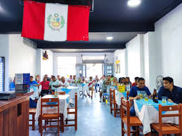
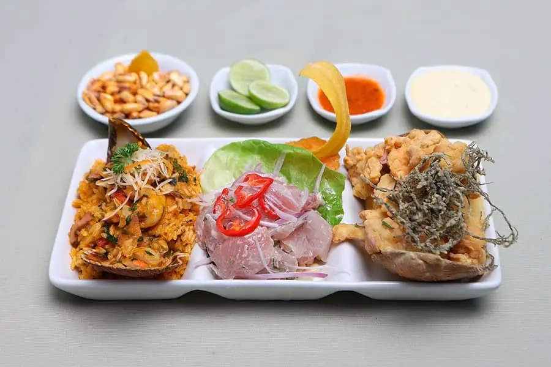
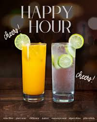

DE LUNES A DOMINGO EN SALON DE 10AM A 5PM
Ven y disfruta de nuestro acogedor local, donde podras venir
con tu persona favorita, grupos de amigos o con tu equipo de trabajo.



"Fundada en 2020 en Surco,lima. La cevichería 7 Mares se inspiro en la comida marina peruana
con una propuesta audaz basada en los 7 oceanos de nuestro hermoso planeta, ofreciendo platos creativos
y frescos en un ambiente temático formal. Reconocido por sus más de 6 años de trayectoria,
combina tradición y técnica, bajo el concepto "Recorrer los 7 mares del mundo es divino, probar sus
riquezas es perfecto."
Ven y disfruta de nuestro acogedor local, donde podras venir
con tu persona favorita, grupos de amigos o con tu equipo de trabajo.

Pide atraves de nuestra web y dsifruta de nuestro
servicio de delivery completamente gratis. Tambien
llegamos a todo lima con un ligero cargo segun la zona
llamando al numero 01-255-5555.

Disfruta de la variedad de Trios marinos armando el tuyo
como gustes y obten un 20% de descuento de 10 am a 12pm

Tenemos los mas ricos y refrescantes cocteles en una promocion
de happy hour en 2x1 de 12 a 4pm ¡ No te lo pierdas!
